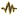
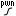
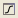

FaceFX
| Conversation topics |
|---|
The FaceFX tool generates facial animation for characters, including lip-synching.
Contents
Overview
A facial performance is an additive combination of a large number of much simpler component animations with each component animation having a graph that defines how strongly weighted it is at any given point of time.
For example, one component animation might be a raised right eyebrow. Over the course of a line of dialog the weight of the raised eyebrow animation might spend most of its time at zero, but whenever the actor is to raise his eyebrow the animation's weighting briefly increases to impose it on the finished product. Other component animations, for example a furrowed brow or a tilted head, could also have their weighting increased at that point to various degrees to add them to the facial expression.
Here's an example graph showing two animation weight curves in FaceFX, in this case the animations "Eyebrow Raise" and "Emphasis Head Pitch". You can see that there are two distinct gestures encoded here, first one in which the eyebrow is raised and the head is pitched modestly in one direction, and second one in which the eyebrow is raised and the head is pitched more strongly in the other direction. Along the bottom you'll see the audio of the line, as well as the phonems FaceFX has broken it down into and the text it was based on. The "SIL" block indicates a pause (silence).
{kind=link}
Much of the complexity of a FaceFX animation will involve the movement of the mouth to match the phonems being spoken by the voice-over line. Fortunately, this is for the most part done completely automatically by FaceFX.
FaceFX commonly uses two file types. FXA files are "FaceFX Actor" files (eg. "Humanmale.fxa") containing bone definitions. They are created using a Max plug-in, and come with the game; you won't need to edit these, just select them from the existing collection. FXE files are facial animation files (eg. "46634_m.fxe"). These are the files that contain the facial performance for the actor to follow.
Automatically generating a basic facial performance
From the Conversation Editor you can automatically generate a basic facial performance. Open the dialog whose lines you wish to work with.
FaceFX generation requires corresponding VO. It must either be recorded already, or you can choose "Generate VO Local" (found in the Tools menu) which will create synthesized VO for the conversation:

This will generate a basic synthesized voice that's suitable as a placeholder while you're tweaking the conversation, to avoid having to record a lot of voice acting that may not be used in the end.
Once the voice over is generated, simply click the "generate FaceFX" option in the same Tools menu:

to automatically generate a facial performance. This can be done on a per-line basis by selecting a single line of dialog before clicking this option, or it can be done for the entire conversation tree by selecting the root before clicking this option.
The automatic facial performance can be customized with an emotion filter. The emotion can be set using the "emotion" dropdown menu on the cinematics tab for each individual line of NPC dialog:
{kind=link}
Once the facial performance has been generated (and assuming the other cinematic choices you've made for this line allow you to see the actor's face) you can preview how the performance will look. Select "Preview line without generating VO/FaceFX" (since those steps have already been done at this point and we don't want to re-do them every time) and you'll see how it will look:

The mouth movements are determined by the voiceover audio, but the various facial expressions and head gestures are generated based on emotion filter and a random number seed. If you don't like what you see, you can generate a new facial performance by selecting "Preview with new RoboBrad". Do this as many times as you like until you see a facial performance that is close enough to satisfy you, bearing in mind that if it's still not quite right you'll be able to manually tweak every detail later on.
Once you're satisfied with a line's facial performance, click "Lock RoboBrad" to prevent FaceFX from being regenerated. Alternatively, click "Override" to prevent the random seed from changing. If the random seed and the emotion filter don't change then FaceFX can be safely regenerated because it will give exactly the same results.
RoboBrad
RoboBrad is a modification to the FaceFX Studio source code that adds additional animation tracks to the face to convey a particular emotion such as "happy", "angry", or "flirting".
In a game with many thousands of line of dialogue we need to be able to generate a bronze level performance without human intervention. This bronze level performance is intended to be 'good enough' and also to serve as a base performance which can be worked on to bring the quality up to silver or gold standard.
RoboBrad is a system built on top of the lipsync analysis that comes with FaceFX. It relies upon sets of ini files that define what faceFX curves to choose from when analysing a line of a certain length with certain emotion and sub emotion tags.
It has two modes of operation - as a commandlet in the lipsync pipeline and as an extension to the FaceFX studio. The commandlet is a batch processing tool to allow the robobrading of multiple dialogue files at once. The Robobrad button in the FaceFX studio allows users to re-run robobrad on specific performances until they get one more to their liking.
Robobrad uses three main things to do its job.
- The analysis text. This is the text that matches the audio file. It also contains a set of xml tags to guide Robobrad as to how to process the line.
- The ini file containing the configuration for the performance. This details the FaceFX curve values that will produce each expression.
- The lex file. This contains language specific text substitutions to help with the lip sync processing. This is for substituting numerals with proper words so '1' become 'one' or abbreviations so 'Mr' become 'mister'.
RoboBrad requires the Face Graph to have nodes with RoboBrad-specific names (eg. "E_Neutral_Perplexed", "E_Sad_Squint"). It also requires Emotion Config Files to use as input. These are included with Dragon Age's resources.
RoboBrad parses the text file accompanying the line and considers line length and punctuation. It categorizes sentences as AFFIRMATION, QUESTION, or EXCLAMATION depending on whether they end with . (period), ? or !.
NOTE: It only considers the text file, not the sound.
It then adds curves and drives them using animation clips picked from a config file. There is one config file per emotion. To change the emotion generated, a new config file must be loaded.
Each config file contains pools of pre-generated animation clips categorized by line length and sentence type. Once the line length and sentence type have been determined, RoboBrad picks entries randomly from that specific pool. The curves driven by RoboBrad are the same as the curves used by FaceFX itself, so no modification to the output file format is needed. A FaceFX FXE file is generated containing both regular lip-syncing animation and the additions made by RoboBrad.
Fine-tuning facial performance
Once RoboBrad has had his way with the facial performance of your virtual actor, you'll have a solid foundation on which you can go in and tweak some of the details if you wish. For this you'll want to open the FaceFX file in FaceFX itself.
You can open facial performances directly from within FaceFX via File menu -> Open Actor... -> Choose FXA file, and then Actor menu -> Mount Animation Set... -> Choose pre-generated Bronze FXE file. This requires you to know the filenames of the necessary FXA and FXE, however, which can be cryptic.
Much more conveniently, you can open a line's associated FXA from directly within the conversation editor. Select the line whose performance you want to edit and chose "Edit FaceFX" from the tools menu:

The tabs that will be of primary use to you are the "Preview" tab (self-explanatory, this lets you see a preview of the facial performance you're working on) and the "Animation" tab (this is where you'll see the curves that set the strength over time of all the various animations that blend into a complete facial expression).
Preview tab
{kind=link}
The main preview window shows a view of the actor's face in the main window. The actor used will be the default appearance for the race and gender of the character, not the customized head morph you may be using in the game itself. The facial performance will still use your customized head morph in the game, however.
To play the animation, click the play button in the toolbar in the lower left corner of the screen:
{kind=link}
Also in this toolbar is a button to jump back to the beginning of the animation and a button to play the animation in an endless loop.
You can generate and test new RoboBrad performances in this tab by clicking the button. Each time you click that button the RoboBrad curves are set to a new randomly-generated performance, which you can then view by clicking play.
To change RoboBrad's emotion filter, select Tools menu -> Load RoboBrad Config... -> Choose emotion ini file (should be in FaceFXInstallDir/Configs/RoboBrad).
Animation tab
The animation tab is where work to adjust the facial performance can be done. It shows the weighting graphs of the various facial animations, as well as the spectrum of the sound file and the text and phonetic analysis of the line being spoken.
{kind=link}
You can edit each individual RoboBrad animation's weight curve in this tab. All of the animations that can be used in this performance are listed to the left of the main window, including both lip-synch animations and RoboBrad's expression animations.
First you will need to take ownership of the RoboBrad curves away from FaceFX's automated analysis system, allowing you to edit them and preventing FaceFX from re-RoboBrading them. Initially all animations are owned by the analysis system and are marked with the

icon. To take ownership of RoboBrad curves, click on
. RoboBrad's curves will now be marked with the icon.When you select one of these animations the curve will now be displayed with editable control points. You can drag these points around with the mouse pointer and adjust their slopes. To add a new control point, press the "insert" button and the mouse pointer will become a crosshair that adds a point where clicked. The selected point can be deleted with the delete key.
{kind=link}
If the automated RoboBrad pass didn't add an animation that you wanted to work with, or if you don't want to use an animation that it added, you can edit the list of available animations by opening the curve manager (either by right-clicking on the animation's curve list or by clicking the

button). This brings up the curve manager:{kind=link}
The animation toolbar has the following buttons:
{kind=link}
When you're done and are satisfied with the facial performance, click "Post to Local" to export.
Generating facial performance from scratch
Generally speaking, it should never be necessary to start creating a facial performance from scratch. But in case a situation arises where it's needed, you can start from scratch in FaceFX Studio:
- File menu -> Open Actor... -> Choose FXA file
- Tools menu -> Load RoboBrad Config... -> Choose emotion ini file (should be in FaceFXInstallDir/Configs/RoboBrad)
- Actor menu -> Animation Manager...
- Click "New Group", name it after the StringID of the line (eg. "46634_m").
- NOTE: This name may become the name of conversation (eg. "zz_char_creation") depending on how we package conversations in the future.
- Click "Create Animation..."
- Leave Analysis Type as "Automatically generate..."
- Next > Browse for audio file of dialog line.
- Next > If there is a TXT file (containing the line text) with the same name as the WAV in the same directory, the Analysis Text will be filled in for you. Otherwise, type the text of the line here.
- Next > Leave language as USEnglish and Generate Speech Gestures on
- Next > Name the animation the same as the StringID of the line (eg. "46634_m")
- Click "OK" to close the Animation Manager
- Click "New Group", name it after the StringID of the line (eg. "46634_m").
- Click "Play"
- (Preview plays with new RoboBrad results)
- Click (Re-RoboBrad)
- Repeat to taste...
- Hand tweak results
- Click (Own non-analysis curves) to lock the RoboBrad curves so they won't be regenerated.
- Click "Post to Local"